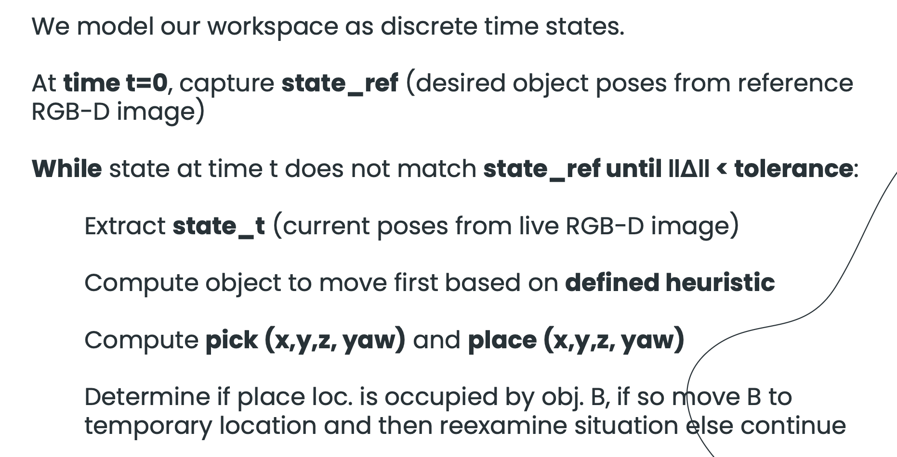

Kenneth Llontrop
EECS
Short bio and major contributions: [edit] — hardware, integration, video, report.
Zero-shot framework to clean messy tabletops · EECS 106A · Group 17 · ROS 2 · UR7e · Intel RealSense
In one sentence (deck voice): Tidyer turns a messy desk into your reference layout—no giant off-the-shelf VLM required—by closing the loop between RGB-D perception, discrete “who moved?” reasoning, and a UR7e that actually executes the tidy.
The project’s north star matches the slide narrative: transform a cluttered tabletop so it matches a user-provided reference RGB-D snapshot, then keep iterating until the live scene and the reference agree within tolerances. Operationally, that is implemented as a service-triggered perception node that compares segmented objects between frames and publishes pick and place end-effector goals for the arm (/capture_reference, /capture_current, publisher /pick_place_pair in tidyer/perception/process_pointcloud.py).
The deck argues robotics should be generalizable, robust, and interactive. Tidyer tries to earn that without leaning on heavyweight vision-language models: you get “zero-shot” tasking from a single reference photo, then classical geometry and controls do the heavy lifting. The hard parts line up with the code: stable color segmentation under real lights (hsv_ranges_json per label), lifting noisy depth to trustworthy 3D (pinhole back-projection plus RANSAC plane fitting in _block_top_xyz_camera / _ransac_plane_z_at_pixel), deciding which block moved (nearest-neighbor pairing in image space plus thresholds), resolving swaps when the goal footprint is occupied (_occupiers_at_place_contour + _find_free_spot), and closing the loop after human or robot mistakes (keyboard-driven /capture_current cycles and optional /arm_auto_capture_chain in tidyer/planning/keyboard_trigger.py and tidyer/planning/main.py).
The same pattern—reference state + gap detection + guarded manipulation—shows up anywhere a robot must restore a known layout: kitting, light assembly trays, assistive “clear the desk,” retail restocking, and toy brick or modular structures. The codebase already anticipates stacking beyond pure 2D swaps via /toggle_stacking, which flips logic so overlapping contours at the goal no longer force a displacement move (_on_toggle_stacking gates the occupier check in _on_capture_current).
reference_detections from a captured RGB frame and depth snapshot when the user calls /capture_reference./capture_current either declares success (no moved blocks) or emits exactly one pick–place pair for the arm.base_link: perception must transform camera-frame geometry using tf2_ros.Buffer and do_transform_point before publishing PoseArray on /pick_place_pair./compute_ik) plus RRTConnect joint-space plans (/plan_kinematic_path) in tidyer/planning/ik.py, executed on the UR through FollowJointTrajectory in tidyer/planning/main.py.
The slide stack—RealSense → OpenCV perception → IK / motion planning → UR7e + gripper—maps cleanly onto running processes: realsense2_camera and ur_moveit are brought up beside package nodes from launch/tidyer_bringup.launch.py (process_pointcloud, tidyer_tf, tidyer_pick_place). The static transform from wrist to camera optical frame is published at 20 Hz from tidyer/planning/static_tf_transform.py (wrist_3_link → camera_color_optical_frame with hand-measured translation), which is exactly the link the deck describes as needing for gcam→base.
hsv_ranges_json) instead of hard-coded magic numbers only./capture_desk_depth stores a single desk_depth_m median for an empty desk, then _compute_desk_block_mask filters segmentation to a physical band around that plane—this is the “table height z-offset / plane filtering” story from the solutions slide, implemented as parameters block_height_min_m, block_height_max_m._find_moved_objects), and the next block to act on is chosen by sorting moved pairs by descending contour area (moved.sort(key=lambda d: d[0].area_px, reverse=True))—a simple proxy for “biggest obvious error first.” Displacement landing uses a nearest free pixel to the occupier’s centroid (_find_free_spot), which is the nearest-neighbor flavor for temporary placements. If you extend the weighted heuristic, document it next to that sort key so the report and code stay matched.
RANSAC plane fitting rejects spurious depth spikes on block sides before committing to a grasp height; PCA-based yaw bails out when eigenvalues indicate a nearly symmetric block so the gripper does not chase unstable headings. Those choices improve robustness at the cost of extra compute inside tight perception loops. MoveIt planning uses conservative velocity and acceleration scaling (0.3 in plan_to_joints), trading cycle time for fewer protective stops—directly addressing the deck’s “UR protective stop / aggressive tuning” pain point where perception noise stacks with motion aggressiveness.
The deck calls out a UR7e arm with a wrist-mounted Intel RealSense stream (aligned depth to color, point cloud enabled in launch). The static extrinsic in code is the calibrated hand-eye style offset from wrist_3_link to camera_color_optical_frame; tune these three translation numbers when the mechanical mount changes.
| Subsystem | What the repo actually runs |
|---|---|
| Camera | Topics defaulted in parameters: rgb_topic, depth_topic, camera_info_topic (aligned depth to color). |
| TF tree | tidyer_tf + robot URDF / MoveIt frames; perception listens on tf2_ros for camera_color_optical_frame → base_link. |
| Perception | ros2 run tidyer process_pointcloud → class TidyerPerceptionNode. |
| Manipulation | tidyer_pick_place node subscribes to /pick_place_pair, calls IKPlanner.compute_ik and plan_to_joints. |
| Operator UI | tidyer_keyboard in a separate TTY (per launch comment)—keys d/r/c/s/q map to desk capture, reference, current loop, stacking toggle, quit. |
latest_rgb / latest_depth copies and run _segment_objects.cv2.inRange → morphology → cv2.findContours; centroid uses the center of the axis-aligned bounding box (commented rationale: shadows bias raw moments).CameraInfo populate fx, fy, cx, cy. For each contour, 3D points use the pinhole relations x = (u − cx) z / fx, y = (v − cy) z / fy—the same structure as the slide’s pcam = d · K−1 [u, v, 1]T, applied per valid pixel sample inside the eroded mask._ransac_plane_z_at_pixel fits a plane to back-projected inlier points, checks that the normal still has a strong Z component (reject side-lock), then intersects the view ray through (u, v) for the reported top height; fallback is the 20th percentile depth if RANSAC fails._grasp_yaw builds a 3D point set on the block top plateau, runs eigen-decomposition, transforms the long axis into base_link via do_transform_vector3, and sets gripper yaw perpendicular to that axis—exactly the “PCA on contour point cloud in base frame” story, with guards for low point count and near-symmetric eigenvalues.position_tolerance_px defaults to 50 pixels; yaw_tolerance_rad defaults to ≈10° (0.175 rad), with yaw deltas ignored for rotationally symmetric shapes where PCA is unreliable.overlap_margin_px) intersects another live contour, the largest occupier is sent to a desk pixel found by distance transform (_find_free_spot) before the original pick–place can succeed—this implements the flowchart branch “place occupied? → move object to temporary location.”_make_pose (top-down quaternion convention: 180° about Y then yaw about Z) and publish two poses in base_link.tidyer/perception/process_pointcloud.py (services, segmentation, RANSAC, PCA yaw, overlap logic, parameters).
The deck’s product-of-exponentials discussion is the conceptual model for why IK matters; in software the arm consumes discrete Cartesian goals from perception. IKPlanner.compute_ik calls MoveIt’s GetPositionIK with seed chaining to avoid wrist flips between pick and place orientations. plan_to_joints requests RRTConnectkConfigDefault through GetMotionPlan. The executor node builds a fixed motion plus gripper sequence: approach, grasp depth (with gripper_offset_m, finger_insertion_m, approach_height_m parameters), toggle gripper, retract, place approach, place, toggle, return to DEFAULT_JOINTS home—mirroring “plan move → execute pick/place → return home” from the workflow slide.
tidyer/planning/ik.py (IK + RRTConnect), tidyer/planning/main.py (pair_callback, job queue, trajectory action client, auto-capture chain hooks).tidyer/perception/process_pointcloud.py — segmentation, depth geometry, overlap logic, /pick_place_pair publisher.tidyer/planning/main.py — pick–place executor: IK, joint plans, gripper, default-pose verification, auto-capture chain.tidyer/planning/ik.py — MoveIt GetPositionIK + GetMotionPlan (RRTConnect).tidyer/planning/static_tf_transform.py — wrist → camera optical static TF.tidyer/planning/keyboard_trigger.py — desk / reference / current / stacking triggers (separate TTY).launch/tidyer_bringup.launch.py — RealSense, perception, TF, pick–place, MoveIt.
docs/assets/).
Operator (keyboard_trigger.py)
d → /capture_desk_depth (median depth on empty desk)
r → /capture_reference (state_ref: segmented detections + saved RGB)
c → /arm_auto_capture_chain + /capture_current loop until message contains
"Scene aligned with reference" (see _SCENE_ALIGNED_SNIPPET)
s → /toggle_stacking (swap vs stack semantics)
Each /capture_current (process_pointcloud.py)
segment current → _find_moved_objects vs reference
if none → success + write final.png
else → optional displacement if place footprint occupied (unless stacking_mode)
else → publish /pick_place_pair → main.py executes queue → optional next capture
launch/tidyer_bringup.launch.py includes RealSense, perception node, TF node, pick–place node, and UR MoveIt; keyboard remains external per launch comment.
The slide deck highlights translation + rotation fixes, explicit swapping, color-sorted desktop tidies, artistic layouts, self-correction after disturbances, and multi-layer 3D assemblies (“Ikea chair,” staircase). Each of those behaviors is reachable with the current architecture: translation/rotation and swaps are the core _find_moved_objects + pick–place loop; color organization is inherent to label-conditioned HSV channels; art and multi-step layouts are repeated operator cycles; 3D structures lean on /toggle_stacking and repeated captures so vertical overlap is intentional rather than treated as a swap conflict.
Replace this paragraph with your measured success rate / timing once you freeze numbers for Gradescope. Until then, treat the bullets above as the qualitative claim set from the deck, backed by the mechanisms cited in §3.
Short clips aligned with the deck’s Ex. 1–6 (embed IDs from your team channel; swap if a link rots).
Course narrative video: record a single walkthrough that states purpose on camera and shows the full keyboard workflow (d → r → c) from keyboard_trigger.py.
On the criteria in §2a, the implementation delivers a complete ROS 2 loop from human-provided reference imagery to UR motion, including conflict handling and optional stacking. Performance against “how fast” or “how reliably under harsh light” remains empirical—capture that in §4 once you attach logs from lab trials.
There were plenty of “this worked in sim” moments once RealSense, MoveIt, and the desk entered the loop. Below is the slide list, with the file or mechanism that either caused the pain or carries the mitigation.
base_link ↔ camera): blocked every _camera_point_to_base call until the wrist→optical static TF and robot drivers agreed. Perception now returns explicit TransformException strings in service responses instead of silent NaNs (process_pointcloud.py).planning_time_s requests in plan_to_joints; failures clear the job queue and stop the auto-capture chain in main.py so operators know to re-home or simplify the scene.hsv_ranges_json plus morphology in _segment_objects.pick_z_offset_m, place_z_offset_m) are all knobs tied to this issue.pair_callback—the same story as the deck’s “some branches” warning./capture_desk_depth) and band filter exist specifically to tame that non-ideality.
OpenCV windows inside the perception node (cv2.imshow) are a demo-friendly hack, not a shipping architecture. The desk mask still assumes a mostly flat support surface. Looking ahead—exactly like the “Enhancements” slide—VLMs or language goals, richer object vocab beyond color blocks, reinforcement learning for contact, and tighter accuracy all imply swapping modules at the boundary (_segment_objects, move ordering, or planner interfaces) so tomorrow’s upgrades stay traceable against today’s baselines.
Group 17 — bios below track the slide deck; edit contribution bullets to match who owned perception, planning, hardware, video, and this site.
EECS
Short bio and major contributions: [edit] — hardware, integration, video, report.
EECS
Short bio and major contributions: [edit] — perception, planning, controls.
CS + Business
Short bio and major contributions: [edit] — software, site, integration.
EECS + Business
Short bio and major contributions: [edit] — repository, ROS graph, demo branch.
package.xml, setup.py entry points, launch/).demo line for the latest end-to-end behavior; main may diverge. Point graders to the branch you want evaluated, and keep docs/ merged there before the Pages deadline.
Slide template attribution (per original deck): presentation template by Slidesgo; icons by Flaticon; assets by Freepik / Stories.